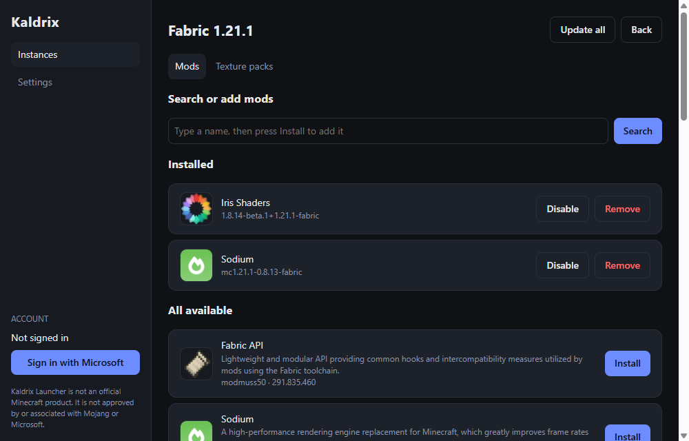

Il launcher che non pesa sul gioco.
Kaldrix Launcher gestisce versioni, istanze e mod di Minecraft Java Edition su Windows. L'installer pesa meno di 3 MB.
Download in arrivoIl launcher è in sviluppo. Per giocare servirà un account che possiede Minecraft Java Edition.

Cosa fa
Istanze separate
Ogni istanza ha la sua versione, la sua memoria e le sue mod.
Mod con le dipendenze
Cerca per nome, riconosci la mod dalla sua icona e installa anche quelle richieste. Se ne manca una, te lo dice.
File controllati
Gioco e mod vengono scaricati solo via HTTPS e verificati con il loro hash.
Java automatico
Trova il Java giusto sul PC, oppure scarica quello che serve.
Login ufficiale Microsoft
La password si scrive solo sul sito Microsoft. Kaldrix non la vede mai.
Nessuna telemetria
Kaldrix non raccoglie statistiche su come giochi.
A che punto siamo
| Download di Minecraft e istanze | Funziona |
| Installazione di Fabric, Quilt, Forge e NeoForge | Funziona |
| Texture pack | Funziona |
| Ricerca e installazione delle mod | Funziona |
| Login Microsoft | In attesa della registrazione |
| Analisi AI di mod sospette e crash | In programma |
| Hosting di server | In programma |